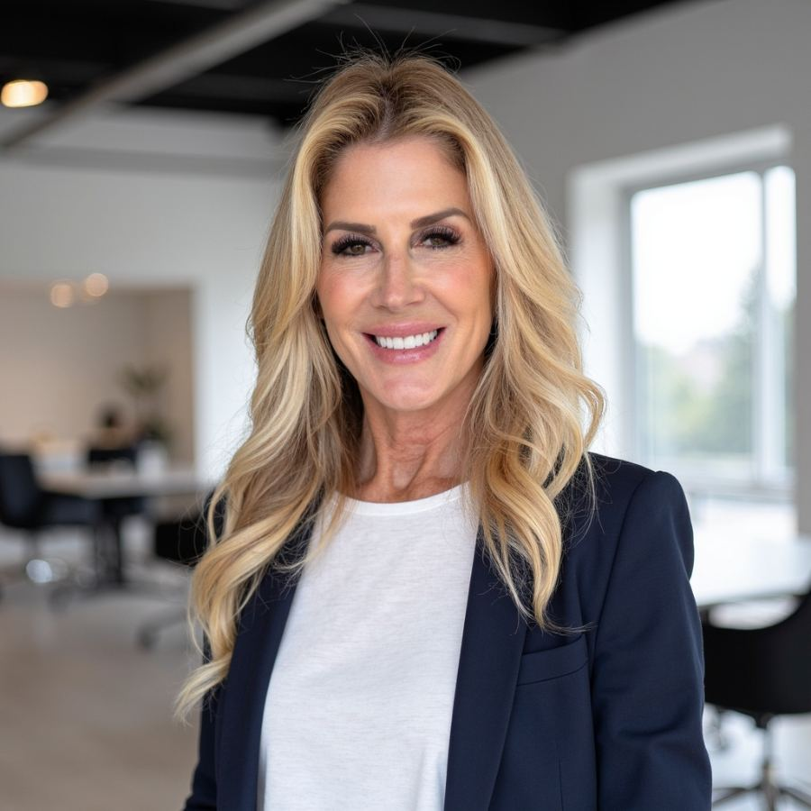

For years your days may have been organized around other people. When children leave home, a marriage changes, or a career winds down, it’s common to feel unsure of what comes next.
What this can feel like
- A house that feels too quiet
- Not knowing who you are outside your roles
- Loneliness, even with people around you
- Changes in your body, sleep, and energy
- A marriage that feels different with the children gone
- Wanting more purpose, but not knowing where to start
What we work on
We look at what has changed, what you want to keep, and what you want to make room for: your relationships, your interests, your work, and how you spend your time. Sessions are practical, and you’ll usually leave with something to try before we meet again.
How the REBUILD Method™ fits
The REBUILD Method™ is the framework I use in our sessions. We start with what feels most urgent, set goals you choose, and work step by step on boundaries, routines, and decisions. It’s informed by established approaches in psychotherapy. It isn’t a separately validated treatment, and it doesn’t promise a particular outcome. About the REBUILD Method™ →
How to get started
Book a free call
The button opens my secure Alma page. Choose a time for a free 15–20 minute consultation.
We talk
I’ll ask what’s going on and what you’d like to change, and answer your questions about how I work.
Decide together
If we’re a good fit, you book your first session and complete intake forms through Alma. If not, I’ll suggest other options.
Frequently asked questions
Is it normal to feel this way when my children leave home?
Yes. Many parents feel grief, relief, and uncertainty all at once. Therapy can help you make sense of those feelings and decide what you want next.
Can my spouse or partner join sessions?
Yes, if it would help. If the changes are affecting your relationship, we can also talk about couples counseling.
Helpful reading
- “Who Am I Now?” Rediscovering Your Identity in Midlife
- Strength Training for Women Over 50: Why Muscle Matters More Than Ever

Dr. Susan Besman, Ph.D., LMFT
Licensed Marriage & Family Therapist with more than 25 years of clinical experience. Ph.D. in Marriage & Family Therapy, Nova Southeastern University.
About Dr. Besman →